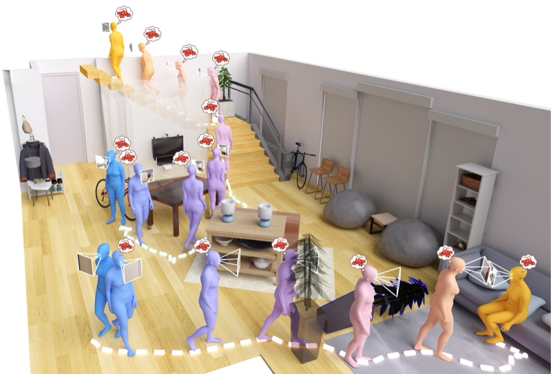
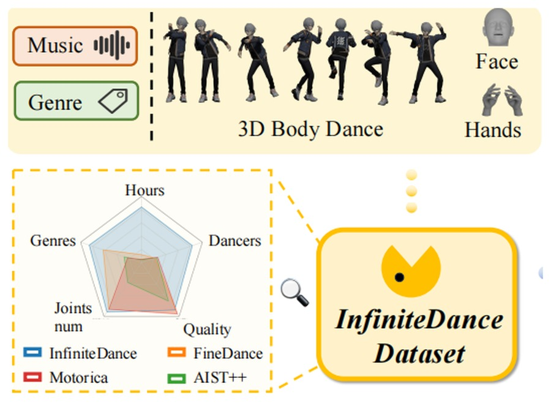
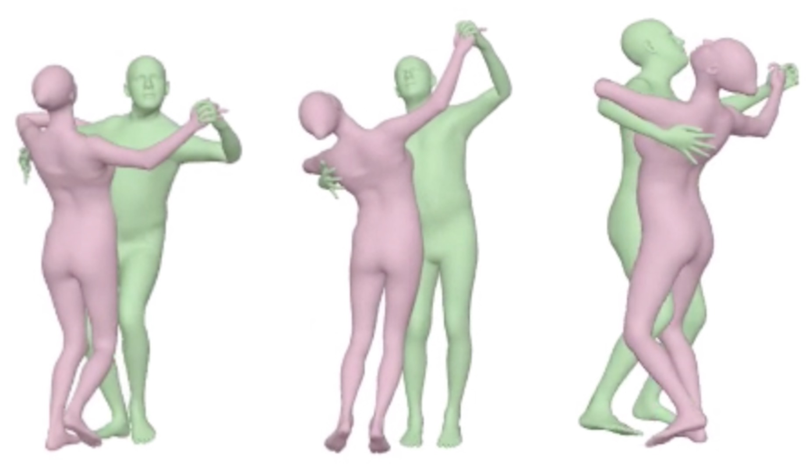
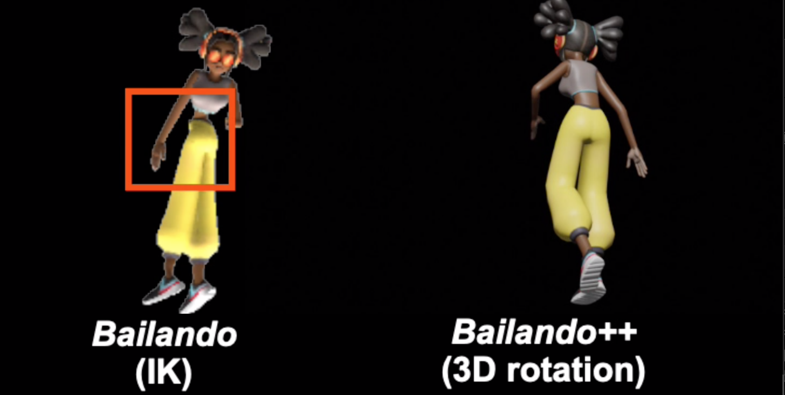
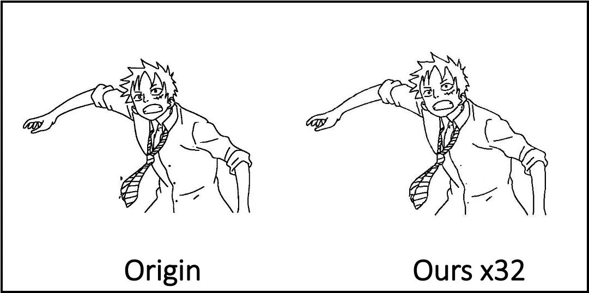
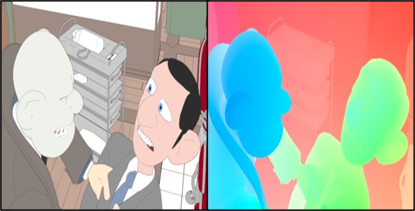
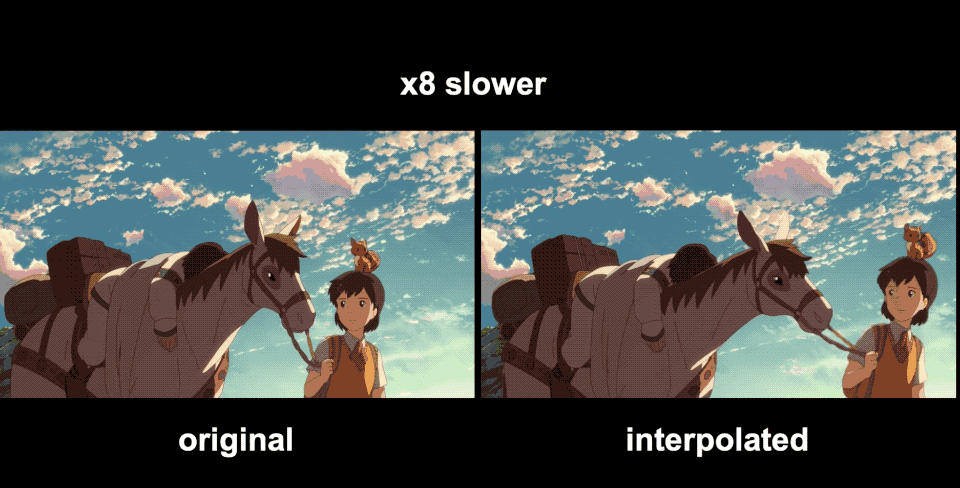
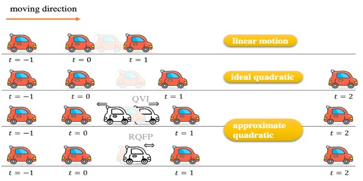
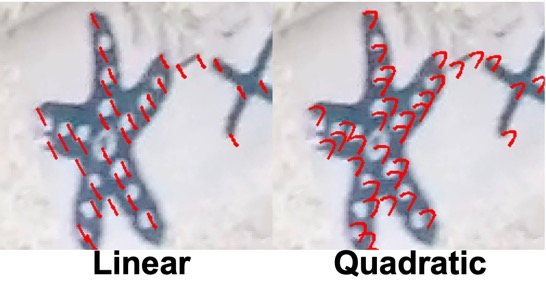

Li Siyao*, Jiawei Gu*, Shuai Liu, Kairui Hu, Zekun Li, Linjie Li, Chengcheng Tang, Po-Chen Wu, Ivan Shugurov, Lingni Ma, Michael Zollhoefer, Sizhe An, Abhay Mittal, Amy Zhao, Ranjay Krishna, Manling Li, Ziwei Liu, Chuan Guo
arXiv preprint, 2026
Project page | Paper | Code

Ronghui Li*, Zhongyuan Hu*, Li Siyao, Youliang Zhang, Haozhe Xie, Mingyuan Zhang, Jie Guo, Xiu Li, Ziwei Liu
ECCV 2026
Project page | Paper | Code

Li Siyao, Yao Feng, Omid Taheri, Chen Change Loy, Michael J. Black
CVPR 2026, PhysHuman Workshop (oral)
Project page | Paper | Code | Demo

Li Siyao, Tianpei Gu, Zhitao Yang, Zhengyu Lin, Ziwei Liu, Henghui Ding, Lei Yang, Chen Change Loy
ICLR 2024
Project page | Paper | Code | Data | Demo

Li Siyao, Weijiang Yu, Tianpei Gu, Chunze Lin, Quan Wang, Chen Qian, Chen Change Loy, Ziwei Liu
TPAMI 2023
Paper | PDF (free) | Code | Demo

Li Siyao, Tianpei Gu, Weiye Xiao, Henghui Ding, Ziwei Liu, Chen Change Loy
ICCV 2023
Paper | Code | Demo

Li Siyao, Yuhang Li, Bo Li, Chao Dong, Ziwei Liu, Chen Change Loy
NeurIPS 2022 (Dataset & Benchmark)
Project page | Paper | Code | Demo
Li Siyao, Weijiang Yu, Tianpei Gu, Chunze Lin, Quan Wang, Chen Qian, Chen Change Loy, Ziwei Liu
CVPR 2022 (Oral, ~4%)
Paper | Code | Demo

Li Siyao*, Shiyu Zhao*, Weijiang Yu, Wenxiu Sun, Dimitris Metaxas, Chen Change Loy, Ziwei Liu
CVPR 2021
Paper | Code | Data | Demo

Yihao Liu*, Liangbin Xie*, Li Siyao, Wenxiu Sun, Yu Qiao, Chao Dong
ECCV 2020, AIM Workshop
1st place of ECCV AIM-VTSR 2020 challenge! Link
Paper | Code

Xiangyu Xu*, Li Siyao*, Wenxiu Sun, Qian Yin, Ming-Hsuan Yang
NeurIPS 2019 (Spotlight, ~15%)
1st place of ICCV AIM-VTSR 2019 challenge! Link
Paper | Code | Data